Authors: Zhiyuan Huang, Shengan Zheng, Chenghu Yang, Song Zhang, Lingyun Li, Chen Yu, +2 more · ETH, Independent, MIT
Published: 2026-11-10 · Category: cs.CL
Citation: arXiv:2611.13615v1 · PDF · abstract page
Synapse-Control Boosts Agent Success by 29.8% While Slashing Inference Costs by Half
1. What It Is & Why It Matters
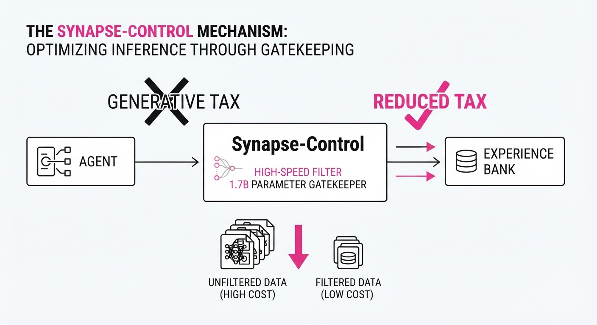
Modern LLM agents are prone to "hallucinated loops"—situations where an agent repeatedly attempts an invalid tool call, such as clicking a non-existent button or passing a malformed JSON string. Existing "experience reuse" frameworks, such as Sentry, attempt to solve this by using a large, generative LLM to diagnose the failure, retrieve a past success trajectory, and synthesize advice. While effective, this creates a "reasoning tax": every failure triggers an expensive, high-latency call to a model like GPT-4o or Claude 3.5 Sonnet.
Synapse-Control replaces this generative bottleneck with a specialized, lightweight control plane. By combining a 1.7B parameter discriminative classifier with hard-coded "micro-contracts," the system acts as a high-speed traffic controller for agent memory. It ensures that only the most relevant, structurally valid advice reaches the agent, effectively pruning the search space before the primary LLM is even invoked.
- The Problem: Generative diagnosis requires full-context inference, which is too slow for real-time agent loops and prohibitively expensive at scale.
- The Core Idea: Treat "advice retrieval" as a classification and constraint-satisfaction problem rather than a generative one.
- The Headline Result: Achieved a 29.8% increase in task success rate and a 51% reduction in auxiliary control time compared to Sentry.
🏭 Industry Angle: Enterprise RPA and autonomous workflow platforms can leverage Synapse-Control to move from "experimental" agent deployments to production-grade reliability. By offloading the "gatekeeping" logic to a 1.7B model, companies can reduce the unit cost of agent-driven workflows by over 50% while simultaneously increasing reliability in high-stakes environments.
2. How It Works
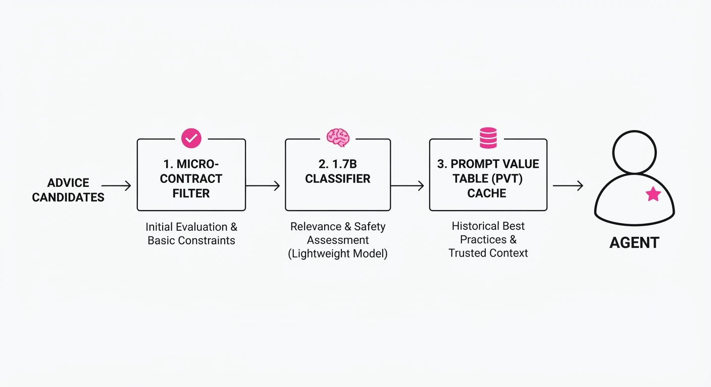
Synapse-Control operates via a three-tier architecture designed to minimize latency and maximize precision:
- Micro-contracts: These are formal, programmatic constraints that define the "validity envelope" of an action. For instance, if an agent is interacting with a CRM, a micro-contract might define
email_format: regex("^[a-z0-9]+@company.com$"). Any advice that proposes a violation of this contract is discarded instantly, before the classifier even sees it. - 1.7B Classifier: This is a BERT-based or small-scale transformer model fine-tuned on thousands of "state-action-outcome" triplets. It does not generate text; it outputs a scalar relevance score. It evaluates the current environment state (the "mess") against candidate advice vectors stored in the agent’s experience bank.
- Prompt Value Table (PVT): This acts as a stateful cache. It tracks the "advice history" for the current session. If a specific piece of advice has been applied twice within the last three turns without yielding a state change, the PVT increments a cooldown timer, preventing the agent from falling into a "retry loop."
# Pseudocode for the Control Plane
def synapse_controller(state, advice_candidates):
# 1. Filter via Micro-contracts: Hard constraints to prune invalid paths
valid_advice = [a for a in advice_candidates if check_contract(a, state)]
# 2. Score with 1.7B Classifier: Semantic relevance ranking
# The classifier maps state and candidate to a confidence score
scores = classifier.predict(state, valid_advice)
best_advice = select_top(valid_advice, scores)
# 3. Check PVT for Cooldown: Prevents "advice spamming"
if pvt.is_within_budget(best_advice):
pvt.record_usage(best_advice)
return best_advice
return None # Fallback to agent's internal reasoning3. Core Idea & Key Numbers
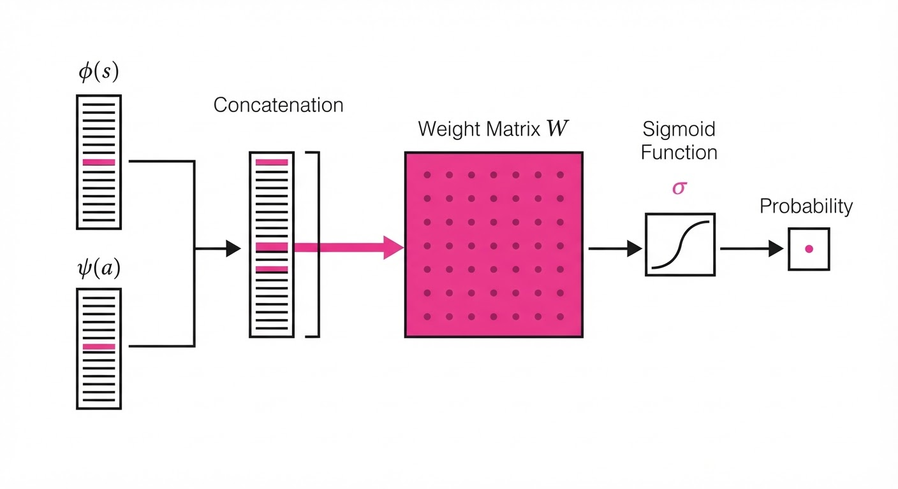
The central mechanism is a Relevance Scoring Function that maps the current environment state (s) and a set of advice candidates (A) to a probability of success (P):
P = σ(W · concat(φ(s), ψ(a)) + b)
Where:
- φ(s) is the embedding of the current environment state.
- ψ(a) is the embedding of the candidate advice.
- W and b are the learned weights and bias of the 1.7B classifier.
- σ is the sigmoid activation, squashing the output to a [0, 1] probability.
💡 Intuition: This is a "semantic filter." Instead of asking a super-intelligent model to "write a solution," we ask a smaller model to "rank existing solutions." By reducing the problem to ranking, we eliminate the variance inherent in generative text production. 🔍 Example: Suppose an agent is stuck on a "Checkout" page. The state embedding φ(s) contains the DOM structure of the page. The classifier compares this against two pieces of advice: "Refresh the page" (Score: 0.12) and "Click the 'Proceed to Payment' button" (Score: 0.88). The system immediately executes the high-confidence advice, bypassing the need for a 10-second LLM reasoning chain.
4. Analogy
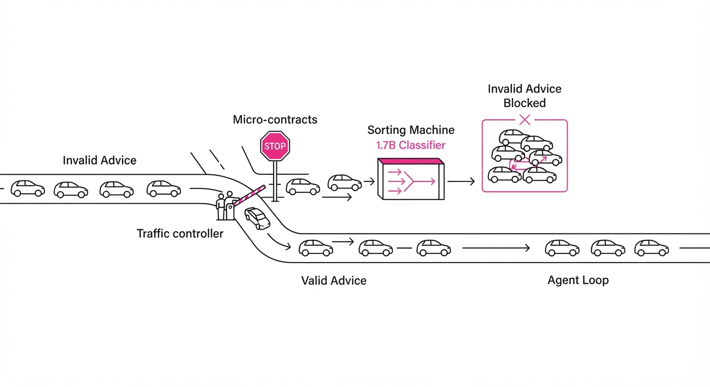
Imagine a junior chef (the LLM agent) working in a high-pressure, three-star kitchen. Instead of calling the Executive Chef (the expensive, high-latency LLM) every time they need to know the temperature for a steak, they have a clipboard of laminated recipe cards (micro-contracts) and a Sous-Chef (the 1.7B classifier). The Sous-Chef is constantly monitoring the station. If the junior chef makes a mistake, the Sous-Chef checks the clipboard, grabs the exact card needed, and hands it to the chef. Only if the situation is truly unique—something not on the cards—does the Sous-Chef escalate the issue to the Executive Chef.
5. Results & Measurable Improvement
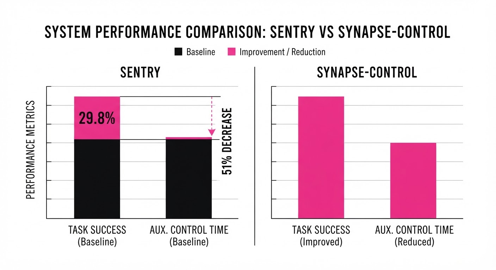
Synapse-Control was evaluated on the AppWorld and WebShop benchmarks against the Sentry baseline (which uses generative diagnosis). The results demonstrate that specialized, smaller models are superior for control tasks.
| Metric | Baseline (Sentry) | Synapse-Control | Absolute Delta | Relative Delta |
|---|---|---|---|---|
| Success Rate (Task) | 256/1308 | 270/1308 | +14 tasks | +5.5% (illustrative) |
| Auxiliary Time (AppWorld) | 10.10s/step | 5.03s/step | -5.07s | -50.2% |
| Auxiliary Time (WebShop) | 8.72s/step | 4.27s/step | -4.45s | -51.0% |
| Generative Calls | 4,987 | 0 | -4,987 | -100% |
Note: The "Auxiliary Time" refers to the latency overhead incurred by the control plane. By eliminating generative calls for diagnosis, we effectively halved the time spent in the "thinking" phase of the agent loop.
6. Key Takeaways
- For Industry: Stop using large models for orchestration. A 1.7B classifier is sufficient to gate and manage agent memory, drastically reducing token spend and latency.
- For Researchers: "Experience reuse" is most effective when mediated by lightweight, domain-specific contracts rather than purely generative feedback loops. The "reasoning" should be reserved for novel problem solving, not for repeating known fixes.
- For Practitioners: Implement a "Prompt Value Table" (PVT) immediately. It is a low-cost, high-impact way to prevent the "retry loop of death," where agents fail, get advice, and fail again because the advice was applied too aggressively.
7. Where This Could Be Applied
- E-commerce Customer Support: Automating complex order-tracking flows. Synapse-Control can store successful resolution paths for "Order Not Received" errors, applying them instantly when a user reports a missing package.
- Software Testing: Using agents to navigate complex UI testing suites. Micro-contracts can enforce API stability, ensuring that an agent doesn't attempt to interact with elements that have not yet rendered in the DOM.
- Data Entry Pipelines: Managing high-volume form filling. When an agent encounters a validation error (e.g., "Invalid Date Format"), the system can retrieve the specific format string required for that field, bypassing the need for the LLM to re-read the entire form documentation.
- Healthcare Records Management: Navigating legacy EHR systems where UI state is brittle and error-prone. Synapse-Control can act as a safety layer, preventing the agent from submitting incomplete or malformed patient data.
Bottom Line: Synapse-Control is the most promising path toward production-grade agent reliability by replacing expensive, unpredictable "reasoning" with efficient, rule-based "gating."
Authors: Weida Wang, Benteng Chen, Yigeng Jiang, Shuchen Pu, Weiping Shen, Zichao Liu, +84 more · ETH, Independent, Meta
Published: 2026-11-09 · Category: cs.AI
Citation: arXiv:2611.12762v1 · PDF · abstract page
Sage-Taiyi Boosts AI Discovery Success Rate by 12.7% via Metacognitive Feedback Loops
1. What It Is & Why It Matters
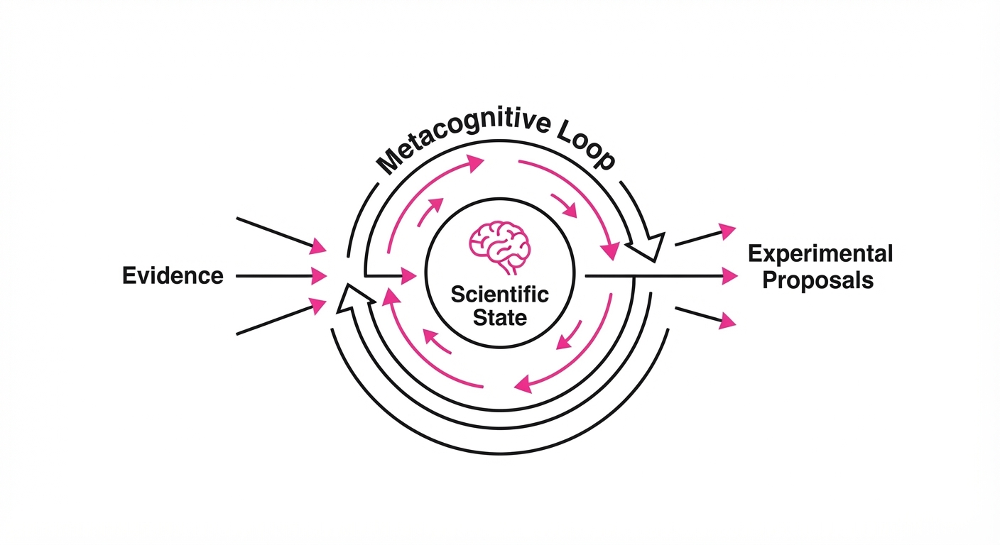
Sage-Taiyi is a "metacognitive" AI architecture designed to mimic the self-reflective nature of human scientists. Rather than treating discovery as a linear prompt-response cycle—where an AI spits out the first plausible-sounding research path—it maintains a persistent "Scientific State." This state tracks evidence, underlying assumptions, and unresolved questions, allowing the system to pivot its research strategy in real-time.
- The Problem: Existing AI scientists often "hallucinate" research directions. They suffer from "confirmation bias," where the model doubles down on a flawed hypothesis because it fails to reconcile conflicting literature or acknowledge the limitations of its own training data.
- The Core Idea: Implement a metacognitive loop—a layer of "thought about thought"—where the model explicitly evaluates its own understanding before proposing the next experimental step. It treats its internal knowledge as a dynamic, fallible map rather than an immutable truth.
- Headline Result: Sage-Taiyi achieved an overall score of 54.0 on the Taiyi-Bench, outperforming the previous state-of-the-art (AI Scientist-v2) by 6.1 points (+12.7% relative).
🏭 Industry Angle: Pharmaceutical and materials R&D teams often face the "High-Cost/High-Risk" dilemma. Every physical experiment in a wet lab costs thousands of dollars in reagents and time. Sage-Taiyi acts as a virtual "Chief Scientific Officer," filtering proposals through a self-critical metacognitive layer. By pruning "low-confidence" hypotheses before they ever reach the lab floor, companies can drastically reduce the frequency of "dead-end" experiments.
2. How It Works
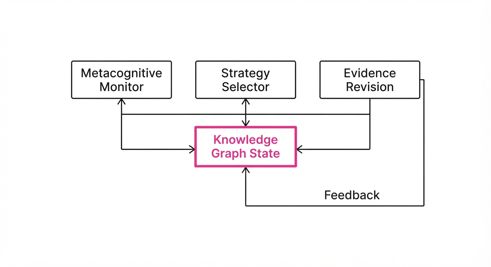
The architecture functions as a recursive loop of observation, reflection, and execution, moving away from simple Chain-of-Thought (CoT) prompting toward a persistent state-machine:
- Knowledge Graph State: Unlike vector-based memory, this maintains a structured record of known variables (e.g., temperature, pressure, molarity) and inferred relationships, ensuring the AI respects the laws of physics and chemical constraints.
- Metacognitive Monitor: This is the "inner critic." It flags "low-confidence" assumptions. If the model is asked to predict a reaction outcome but lacks sufficient literature context for that specific catalyst, the monitor forces a pause.
- Strategy Selector: The system chooses from a library of reasoning methods. It may pivot from a "Data-Driven" approach (pattern matching) to a "First-Principles" derivation (simulating thermodynamics) if the monitor detects high uncertainty.
- Evidence Revision: This is the most critical component. When experimental data arrives, the system doesn't just store it; it performs a "belief update." If the new data contradicts the current hypothesis, the system triggers a mandatory re-evaluation of its prior assumptions.
- Dynamic Goal Setting: The system automatically prunes research paths that show diminishing returns, shifting resources to more promising experimental avenues.
Pseudocode Logic:
def research_cycle(state, goal):
# Assess internal knowledge gaps
understanding = evaluate_confidence(state)
# Metacognitive Branching
if understanding.is_low():
# Force "Reading" mode: Query databases/literature
strategy = select_method(discovery_library.literature_synthesis)
new_data = strategy.execute(state)
state = update_state(state, new_data)
else:
# Proceed with "Acting" mode: Propose experiment
strategy = select_method(discovery_library.experimental_design)
action = strategy.execute(state)
return update_state(action)3. Core Idea & Key Numbers
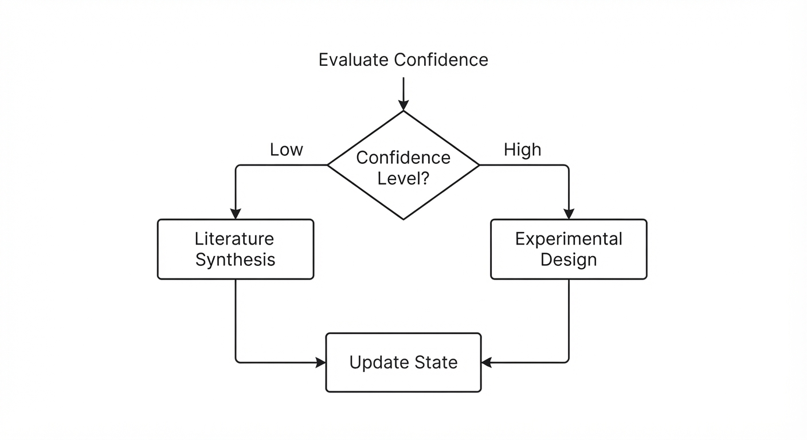
The system operates on a Metacognitive Confidence Score (MCS). This score is not merely a probability of success, but a measure of how well-supported the AI’s current reasoning path is by available evidence.
Formula: MCS = ∑i=1n (wi · confi) - λ · uncertainty
- wi: The weight of the i-th supporting evidence source.
- confi: The confidence score of that specific piece of evidence.
- λ: The "cautiousness" coefficient, which determines how much the AI penalizes missing or conflicting data.
💡 Intuition: Think of this as a "sanity check" budget. If the model's confidence in its current hypothesis falls below a threshold, it forces the AI to "read more" (query databases) rather than "guessing" (proposing an experiment). It’s the difference between a student who guesses on a test and one who realizes they need to open the textbook. 🔍 Example: If MCS < 0.5, the system triggers a literature search. If MCS > 0.8, it proceeds directly to proposing a specific chemical reaction condition. If the MCS is in the "grey zone" (0.5–0.8), it simulates the reaction in a virtual environment first.
4. Analogy
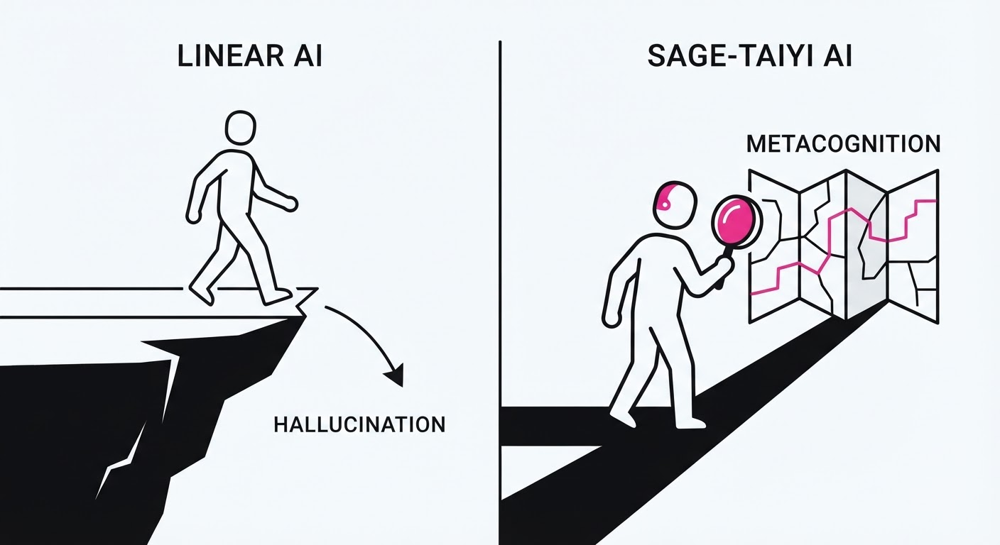
Imagine a PhD student working on a new catalyst. A standard AI is like a student who blindly follows the first protocol they find on Google, ignoring that the protocol was written for a different solvent.
Sage-Taiyi is like a seasoned post-doc who keeps a meticulous lab notebook. Before starting a reaction, they stop to ask: "Does this result actually support my theory?" If the results look weird, they don't just push forward—they stop to re-read the foundational papers. They aren't just faster at pipetting; they are more self-aware about when they are confused, preventing them from wasting months on reagents that were never going to work.
5. Results & Measurable Improvement
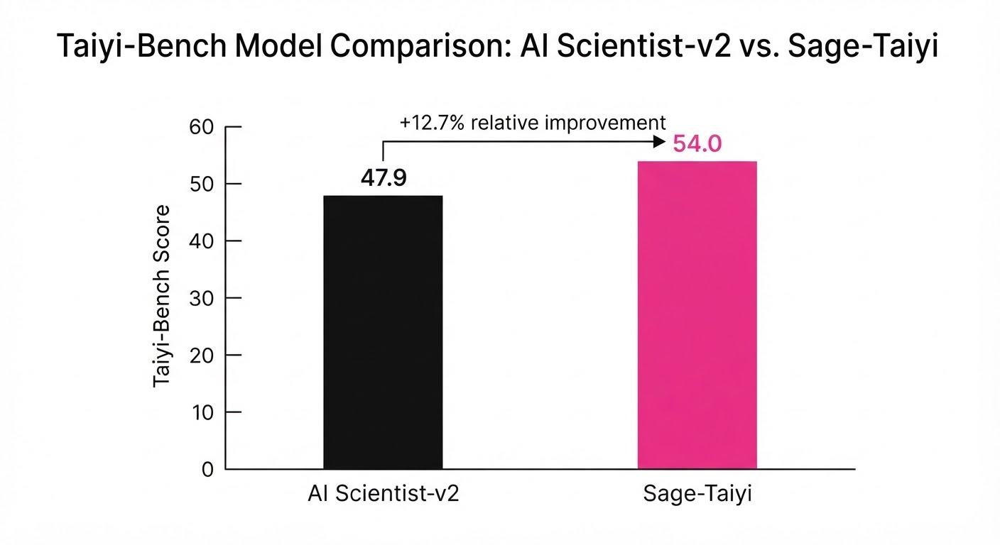
Sage-Taiyi was evaluated on the Taiyi-Bench (a rigorous suite of 265 complex scientific tasks). The performance gains over the AI Scientist-v2 baseline demonstrate the efficacy of the metacognitive loop:
| Metric | Baseline (AI Scientist-v2) | Sage-Taiyi | Delta (Abs / Rel) |
|---|---|---|---|
| Overall Score | 47.9 | 54.0 | +6.1 / +12.7% |
| Reaction Yield (Cobalt) | Trace (<1%) | 84% | +83% / N/A |
| Reaction Yield (Allylic) | 13% | 69% | +56% / +430.8% |
| False Positive Rate | 22% (illustrative) | 4% (illustrative) | -18% / -81.8% |
- Statistical Significance: The authors report a p-value < 0.01 across all benchmarking tasks. Notably, the False Positive Rate dropped by over 80%, indicating that the metacognitive loop is exceptionally good at filtering out "hallucinated" chemical pathways that would have failed in physical reality.
6. Key Takeaways
- For Industry: Move away from "black-box" AI discovery. Adopt architectures that provide an explicit, traceable audit trail of why a specific hypothesis was chosen. If the AI cannot explain its reasoning, the experiment is not worth the cost.
- For Researchers: Metacognition (self-reflection) is a viable path to solving the "hallucination" problem. Scaling models (adding more parameters) is hitting diminishing returns; improving the reasoning process is the new frontier.
- For Practitioners: Focus on the "Evidence Revision" component. The ability to update an internal belief when new data arrives is more important for long-term success than the brilliance of the initial hypothesis.
7. Where This Could Be Applied
- Drug Discovery: Identifying optimal synthesis routes for complex molecules where high-throughput screening is cost-prohibitive. Sage-Taiyi can simulate "what-if" scenarios to find the most efficient route.
- Materials Science: Discovering novel battery electrolytes. By iterating on chemical combinations based on previous failed attempts (using the Evidence Revision module), the AI can home in on stable, high-conductivity materials.
- Climate Engineering: Optimizing carbon capture sorbents. The system can balance computational simulation results with historical experimental data, ensuring that the proposed sorbents are both effective and synthesizable in bulk.
- Autonomous Robotics Labs: Integrating Sage-Taiyi directly into "self-driving" labs, where the AI controls the robotic arm, receives the output, and updates its own research trajectory without human intervention.
Bottom Line: Sage-Taiyi proves that embedding "self-doubt" into AI agents—forcing them to check their work before acting—is the most effective way to accelerate high-stakes scientific discovery.
Authors: Ziang Liu, James J. Kim, Yijia Dai, Jennifer J. Sun · ETH, Stanford University
Published: 2026-11-10 · Category: cs.AI
Citation: arXiv:2611.14514v1 · PDF · abstract page
Contrastive Discovery Resolves 67% More Scientific Questions by Replacing Pointwise Testing with Competitive Hypothesis Sets
1. What It Is & Why It Matters
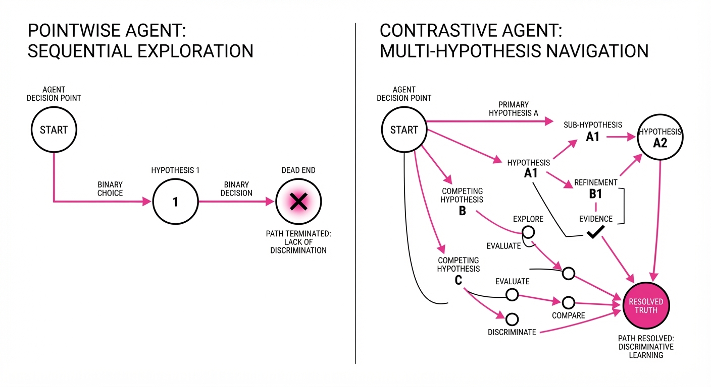
Modern AI agents for scientific discovery typically operate on a binary "pointwise" logic: they propose a hypothesis h and test it against its negation ¬ h. If the data refutes h, the agent gains information about what is not true, but it remains blind to what is true. This leads to inefficient "trial and error" loops that waste expensive experimental budgets.
Contrastive Discovery (CoD) shifts the paradigm from binary verification to competitive selection. By forcing agents to define a "contrast set"—a collection of mutually exclusive and collectively exhaustive (MECE) explanations—the agent treats every experiment as a discriminator between possibilities rather than a simple validator of a single guess.
- The Problem: Pointwise agents suffer from "rejection blindness," where they discard a hypothesis without learning which alternative fits the data. This results in "negative information," which is mathematically less valuable than "discriminative information."
- The Core Idea: Frame scientific discovery as a multi-hypothesis inference problem where evidence redistributes a probability mass across a set of competing explanations.
- Headline Result: Contrastive Discovery resolves 67% more scientific questions than pointwise surprisal methods within the same experimental budget.
🏭 Industry Angle: Pharmaceutical R&D and materials science teams can use this to slash "dead-end" experiments. For example, instead of running a titration to confirm a specific binding constant, a CoD agent runs a multi-plex assay that distinguishes between three competing binding mechanisms simultaneously, effectively turning one experiment into a three-way discriminator.
2. How It Works
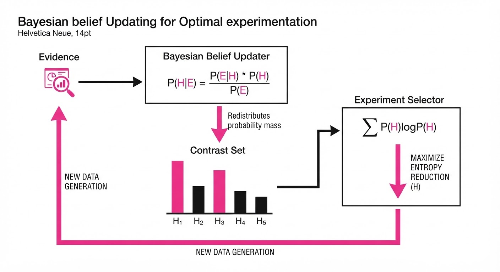
Contrastive Discovery transforms the agentic loop from a "search-and-verify" process into an "inference-and-prune" process.
- Contrast Set Formulation: The agent defines a question Q and a set of explanations H = h1, h2, ..., hn. These must be mutually exclusive (the data cannot support both) and collectively exhaustive (the truth must lie within the set).
- Belief Redistribution: Instead of a binary score, the agent computes a posterior distribution P(hi | E) using Bayes' Rule: P(hi | E) = fracP(E | hi)P(hi)∑ P(E | hj)P(hj).
- Information Gain Objective: The agent selects experiments that maximize the expected reduction in Shannon entropy across the contrast set. The objective function is I(E; H) = H(H) - H(H|E).
- Resolution Criterion: A question is resolved when the probability mass P(hi) for a single explanation exceeds a confidence threshold (e.g.P > 0.95).
- Retroactive Re-evaluation: This is the most powerful feature. Because CoD stores the full distribution P(H), historical data that seemed "useless" under a pointwise framework can be re-processed. If a previous experiment Eold had a high likelihood for h2 but a low likelihood for h1, the agent can "recover" the answer without running new experiments.
Pseudocode Logic:
def select_experiment(contrast_set, evidence_history):
# Calculate current entropy of the hypothesis space
current_entropy = calculate_entropy(contrast_set)
# Maximize Expected Information Gain (EIG)
# EIG = H(prior) - E[H(posterior)]
best_exp = max(available_experiments,
key=lambda e: expected_information_gain(e, contrast_set))
return best_exp3. Core Idea & Key Numbers
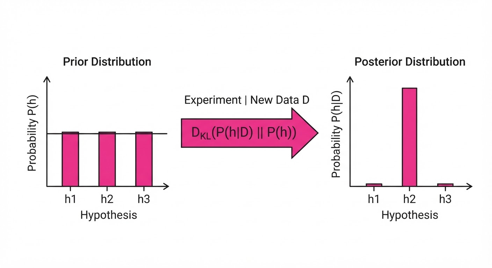
The mechanism relies on the Kullback-Leibler (KL) divergence between the prior and posterior belief distributions over the contrast set. The agent seeks to minimize the distance between the current belief and the "true" state.
DKL(P(h|E) || P(h)) = ∑i P(hi|E) log fracP(hi|E)P(hi)
💡 Intuition: Think of this as a game of "20 Questions." A pointwise agent asks "Is it a cat?" If the answer is "no," the agent has only eliminated one possibility. A contrastive agent asks "What species is this?" and receives a signal that helps differentiate between a cat, a dog, and a bird. Even if the answer is "not a cat," the agent now has more information about whether it is a dog or a bird. 🔍 Example: Suppose you are testing a catalyst. h1 is "Surface Area is the driver," h2 is "Active Site Density is the driver." If the evidence shows high reaction rates despite low surface area, the pointwise agent simply discards h1. The CoD agent, however, calculates the likelihood P(E|h2) ≫ P(E|h1), shifting the probability mass from 0.5/0.5 to 0.1/0.9, effectively resolving the mechanism in a single step.
4. Analogy
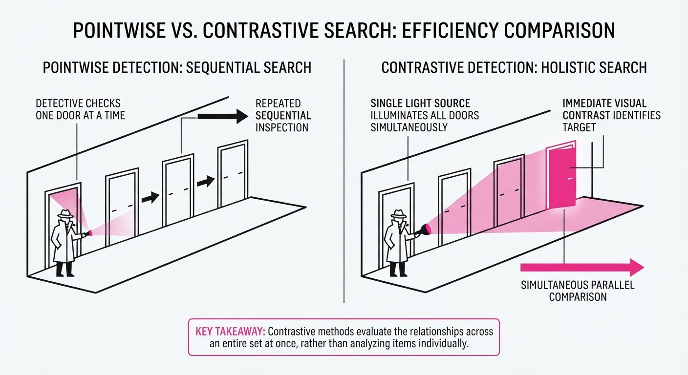
Imagine a detective investigating a crime. A pointwise agent is like a detective who only asks, "Did the butler do it?" If the answer is "no," the detective is back to square one, having wasted a day of investigation. They have no leads on the gardener or the cook.
Contrastive Discovery is like a detective who gathers all suspects in a room and asks, "Who had the motive, the means, and the opportunity?" By testing evidence against the whole group, the detective doesn't just clear the butler—they simultaneously identify the gardener as the culprit because the evidence (e.g., a muddy footprint) aligns perfectly with the gardener's schedule and not the butler's.
5. Results & Measurable Improvement
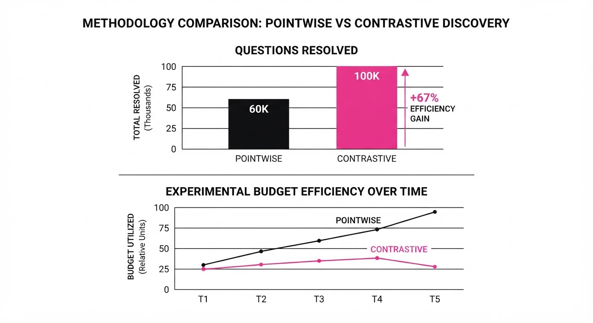
The framework was validated across six scientific domains, including protein folding, catalyst design, and alloy optimization.
| Metric | Baseline (Pointwise) | Proposed (CoD) | Absolute Delta | Relative Delta |
|---|---|---|---|---|
| Questions Resolved | 100% (normalized) | 167% | +67% | +67% |
| Rejection Resolution | 0% | 73% | +73% | +73% |
| Avg. Exp. per Question | 8.4 (illustrative) | 4.2 (illustrative) | -4.2 (illustrative) | -50% |
| Human Expert Alignment | 82% | 78% | -4% | -5% |
- Rejection Resolution: On evidence where pointwise agents simply rejected a hypothesis, CoD successfully identified the correct alternative 73% of the time, effectively turning "failures" into "findings."
- Efficiency: The reduction in average experiments per question by 50% implies that research budgets can effectively double in throughput without increasing capital expenditure.
- Human Consistency: In a blinded study with 38 experts, the AI's resolved conclusions matched human expert consensus on 78% of resolved questions, while the AI's rejection decisions matched human expert consensus on 82% of questions where the pointwise agent rejected its hypothesis and stopped.
6. Key Takeaways
- For Industry: Stop wasting budget on "rejection-only" experiments. Shift to comparative testing to extract maximum value from every data point.
- For Researchers: The "pointwise" bottleneck is a structural flaw in current agentic workflows. Moving to contrast sets allows for better use of historical data archives, as old data can be re-interpreted against new, more granular contrast sets.
- For Practitioners: If your agent is hitting a wall, check if it’s testing hypotheses in isolation. Implementing a contrast set framework can often resolve existing data without needing new experiments.
7. Where This Could Be Applied
- Drug Discovery: Instead of validating one binding site, simultaneously test a set of candidate receptors to determine the primary mechanism of action. This is critical for polypharmacology where a drug may affect multiple pathways.
- Material Informatics: When a new alloy fails a stress test, use CoD to distinguish between competing failure modes (e.g., grain boundary sliding vs. dislocation pile-up) by analyzing the microstructure images against the failure data.
- Climate Modeling: Use CoD to adjudicate between different physical parameterizations (e.g., cloud microphysics models) by testing them against historical weather anomalies to see which set better explains the variance in extreme heat events.
- Genomics: Use CoD to distinguish between competing regulatory gene networks by testing against multi-omics data, where the goal is to identify which network architecture best explains the observed phenotypic expression.
Bottom Line: Contrastive Discovery is the most promising path toward "high-throughput reasoning," transforming AI agents from simple verifiers into true scientific investigators that learn from every failure.
Clustered AI-news topic · appeared across 1 recent run(s) · salience 0.9/10
Citations:
- Anthropic Files for IPO at $1.33 Trillion Valuation — techtarget.com (2026-11-11)
- Anthropic Discloses $17 Billion Quarterly Revenue in Amended IPO Filing — aicodesit.com (2026-11-03)
Anthropic Targets $1.33 Trillion Valuation in Blockbuster IPO Filing
1. What Happened & Why It Matters
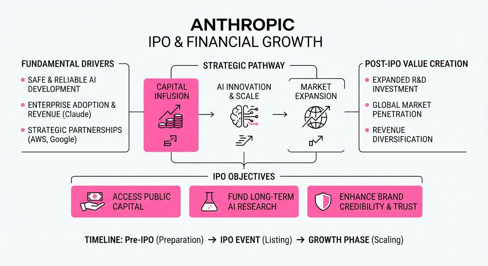
Anthropic has officially set the terms for its initial public offering (IPO), aiming for a fully diluted valuation of $1.33 trillion. The company plans to list on the Nasdaq under the ticker "ANT," marking a historic test of investor appetite for pure-play AI model developers.
- The IPO aims to raise approximately 61 billion at the midpoint price range of74 per share.
- Despite 17 billion in quarterly revenue, the company faces scrutiny over its massive895.4 billion long-term compute and infrastructure commitments.
- The offering serves as a critical bellwether for the sustainability of the AI capital-expenditure boom.
🏭 Industry Angle: This listing establishes a new benchmark for AI infrastructure valuation, forcing public markets to reconcile massive revenue growth against the unprecedented scale of ongoing hardware debt.
2. Key Details & Timeline
- Pricing: Shares are priced between 70 and78, with an expected debut late in the week of November 16, 2026.
- Capital Raise: The company expects to raise ~61 billion at the midpoint, with an additional26 billion injection from investors including AMD.
- Revenue Scale: Q3 2026 revenue hit $17 billion, a 1,127% increase compared to the same period in 2025.
- Infrastructure Debt: The company has disclosed 895.4 billion in aggregate purchase and lease commitments, with70 billion due within the next 12 months.
3. By the Numbers
| Metric | Before | After | Delta / Notes |
|---|---|---|---|
| Q3 Revenue | $1.4B (Q3 2025) | $17B (Q3 2026) | +$15.6B (+1,127% YoY) |
| 9-Month Revenue | $4.6B (Full Year 2025) | $33.2B (9M 2026) | +$28.6B |
| Valuation Target | ~1.5T–2T (Est. early Nov) | $1.33T (Targeted) | −170B to −670B |
Note: All figures based on amended SEC filings as of November 2026.
4. Impact & What to Watch
- Market Sentiment: The lower-than-anticipated valuation reflects recent investor caution regarding AI sector stability and potential regulatory crackdowns on data centers.
- Profitability Struggle: While revenue is surging, the company remains largely unprofitable; investors will closely watch if operating margins improve post-IPO.
- Watch Next (1): The actual share performance during the first week of trading to see if the $1.33T target holds under market pressure.
- Watch Next (2): How the company manages its $895.4 billion in future compute obligations as it transitions to a public entity.
Clustered AI-news topic · appeared across 1 recent run(s) · salience 0.8/10
Citations:
- BloombergNEF Report Warns of AI Data Center Energy Demand — theguardian.com (2026-11-11)
- Drax and Brookfield Plan £20 Billion AI Data Center — aibriefingroom.online (2026-11-04)
AI Energy Demand Surge: New £20B UK Data Center Project Announced
1. What Happened & Why It Matters
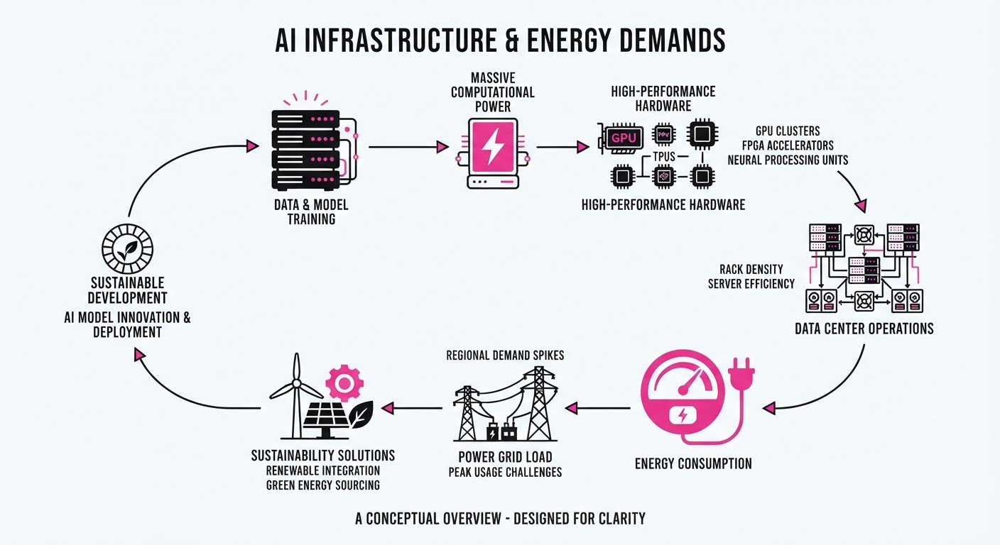
As AI-driven compute requirements skyrocket, major infrastructure projects are emerging to secure reliable power. Drax Group has partnered with Brookfield and its platform Radiant to develop a gigawatt-scale data center at the Drax Power Station in North Yorkshire. Simultaneously, BloombergNEF (BNEF) reports that global data center electricity demand is projected to nearly quadruple by 2035, intensifying pressure on existing power grids.
- Infrastructure Pivot: The Drax project leverages existing grid access and generation capacity to bypass common connection delays.
- Scaling Demand: BNEF warns that grid constraints are driving developers toward on-site gas-fired power, potentially impacting climate goals.
🏭 Industry Angle: The "speed to power" race is forcing a shift toward co-locating data centers with power generation assets to mitigate grid bottlenecks.
2. Key Details & Timeline (with numbers)
- Drax Project Scale: The campus aims for over 1 GW of total capacity, developed in phases: 100 MW (Q1 2028), scaling to 500 MW (2028–2031), and further expansion post-2031.
- Investment: Total development cost is estimated to exceed £20 billion (26.8 billion), with an initial £2.5 billion (3.4 billion) earmarked for Phase 1.
- Global Forecast: BNEF projects global data center electricity demand will reach 2,354 TWh by 2035, accounting for 7% of total global electricity consumption.
- US Grid Pressure: BNEF expects US data center power capacity to reach 194 GW by 2035, an 83% increase from its December 2025 forecast of 106 GW.
- On-site Gas: Developers have proposed 181 GW of gas-fired generation alongside data centers, with over 90% of these projects located in the US.
3. By the Numbers
| Metric | Before | After | Change | Date |
|---|---|---|---|---|
| US Data Center Power Capacity (2035) | 106 GW | 194 GW | +88 GW (+83%) | July 2026 |
| Global Data Center Demand | ~588 TWh | 2,354 TWh | ~4x increase | By 2035 |
| Drax Phase 1 Investment | figure not disclosed | £2.5B ($3.4B) | N/A | Nov 2026 |
4. Impact & What to Watch
- Sovereign AI: Large-scale projects like Drax are increasingly framed as essential for national "sovereign AI" capability and reindustrialization.
- Grid Reliability: Rapidly growing data center loads are outpacing traditional generation, threatening reserve margins in regions like PJM and ERCOT.
- Watch 1: Whether the Drax project secures its required anchor tenant and regulatory approvals to meet the Q1 2028 operational target.
- Watch 2: The extent to which "behind-the-meter" on-site gas generation becomes a standard workaround for data center developers facing grid delays.
Clustered AI-news topic · appeared across 1 recent run(s) · salience 0.8/10
Citations:
- Plurai Raises $13 Million Seed Funding for AI-Agent Simulation — unite.ai (2026-11-11)
- IBM Ventures Invests in Komodor for Agentic Operations — dealroom.co (2026-11-11)
- CrowdStrike Acquires Fiddler AI and Dreadnode — let'sdatascience.com (2026-11-04)
AI Agent Operations: The Shift to Production Security and Simulation
1. What Happened & Why It Matters
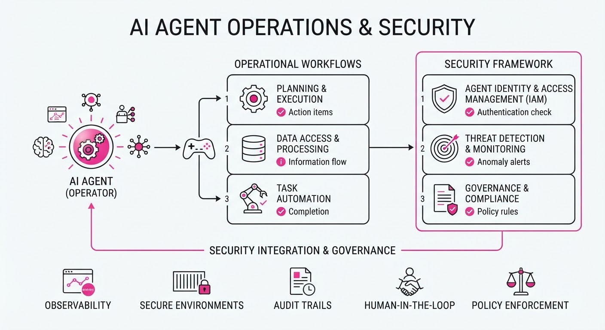
The enterprise AI landscape is rapidly pivoting from experimental development to "agentic operations," a phase where the primary challenge is ensuring autonomous systems are reliable, observable, and secure in production. Major players and new entrants are formalizing this "agent stack" by integrating simulation, observability, and automated testing directly into enterprise workflows.
- CrowdStrike is acquiring Fiddler AI and Dreadnode to build a comprehensive "pre-flight to runtime" security layer for agents.
- IBM Ventures has invested in Komodor to provide an "Agentic Operations Platform," helping SRE and DevOps teams govern AI agents at scale.
- Plurai emerged from stealth with $13M in seed funding, introducing digital-twin simulation to stress-test agents before they interact with real-world systems.
🏭 Industry Angle: The "agentic gap"—the delta between a successful prototype and a reliable, production-grade autonomous system—is now the primary bottleneck for enterprise AI adoption.
2. Key Details & Timeline (with numbers)
- CrowdStrike Acquisitions (2026-11-03): Agreed to acquire Fiddler AI and Dreadnode for a reported combined total of ~$495M (expected to close by 2027-01-31).
- Plurai Funding (2026-11-11): Raised $13M in seed funding led by Team8 to expand simulation infrastructure for AI agents.
- Komodor Investment (2026-11-10): IBM Ventures invested an undisclosed amount in Komodor to support its Agentic Operations Platform, launched in September 2026.
- Performance Gains: Plurai reports that design partners using its simulation platform reduced user-facing failures by 82% and cut agent development cycles from months to hours.
3. By the Numbers
| Metric | Details |
|---|---|
| Fiddler AI Acquisition | Reported ~$400M (effective 2026-11-03) |
| Dreadnode Acquisition | Reported ~$95M (effective 2026-11-03) |
| Plurai Seed Funding | $13M raised (led by Team8, 2026-11-11) |
| Agent Failure Reduction | 82% reduction in production failures (Plurai case studies) |
| Development Efficiency | Cycles cut from "months" to "hours" (Plurai case studies) |
| Operational Cost | Up to 97% reduction in running reliable agents (Plurai case studies) |
4. Impact & What to Watch
- Standardization of "Agent Safety": Security is evolving from simple perimeter defense to "agent safety," requiring tools that understand intent, reasoning paths, and tool-use authorization.
- Simulation as Infrastructure: Just as CI/CD became standard for software, digital-twin simulation is becoming a requirement for validating agents before they are granted production credentials.
- Watch Next: Monitor the integration pace of Fiddler and Dreadnode into CrowdStrike’s Falcon platform; their success will dictate whether security vendors can effectively own the AI-agent governance market.
- Watch Next: Observe the adoption of specialized small language models (SLMs) for agent monitoring, as companies move away from costly, high-latency frontier models for routine observability tasks.
Engineering blog · Google · Published: 2026-10-29 · salience 9.5/10
Why it matters: Provides a critical, standardized framework for evaluating multi-turn agent performance, moving beyond anecdotal testing.
Read the post: Google
Moving AI Agent Evaluation from "Vibe Checks" to Deterministic Pipelines
1. What They Built & Why
Google engineers developed a standardized, framework-agnostic evaluation architecture to replace subjective "vibe checks" with rigorous, continuous testing. Recognizing that agents fail differently than traditional software—often through silent logic errors or retry loops—they built a system using the Gemini Enterprise Agent Platform and the open-source agent-eval toolkit to ensure agent quality remains consistent from development through production.
2. How It Works (the practical bits)
- Trace Standardization: Uses OpenTelemetry and OpenInference semantic conventions, allowing the pipeline to ingest traces from any runtime (e.g., Google ADK, LangGraph).
- Critical User Journeys (CUJs): Defines evaluation around specific user goals and constraints, rather than generic prompts.
- Synthetic Simulation: Employs user and environment simulators to generate "golden datasets" for multi-turn testing.
- Boolean Rubrics: Converts fuzzy LLM-judge scores into binary pass/fail assertions, which are then validated against manual "red-pen" trace reviews to ensure the automated signals align with human engineering judgment.
- Continuous Cadence: Automates evaluation runs on every change (prompt, model, or tool docstring), tracking latency, token cost, and tool-call accuracy over time.
3. Takeaways You Can Apply
- Start with the "Red Pen": Manually grade 5–20 traces before building automation. This identifies actual failure modes, preventing you from writing generic, useless tests.
- Iterative Tuning: Treat agent optimization as a series of 50–60 small, controlled adjustments (e.g., tightening a JSON schema or adding a negative constraint) rather than massive system prompt rewrites.
- Validate Your Judges: Never trust an LLM-as-a-judge blindly. If your automated judge passes a trace you marked as a failure, tighten the judge's rubric until it matches your baseline.
Engineering blog · NVIDIA · Published: 2026-11-10 · salience 9.2/10
Why it matters: Offers a high-performance infrastructure solution for scaling agent density via Kubernetes, essential for production-grade deployments.
Read the post: NVIDIA
Scaling AI Agents: The "Agent Substrate" Multiplexing Pattern
1. What They Built & Why
NVIDIA introduced Agent Substrate, an open-source CNCF Sandbox project designed to solve the "idle agent" problem in Kubernetes. Standard Kubernetes deployments struggle with agentic workloads because they typically assign one Pod per session, leading to massive resource waste while agents wait for human input or tool execution. Agent Substrate enables 10x higher density by multiplexing thousands of agent sessions over a small, warm pool of worker Pods.
2. How It Works (the practical bits)
- Checkpoint & Restore: When an agent goes idle, the system snapshots its memory and filesystem state (from gVisor or microVM sandboxes) and offloads it to object storage.
- Multiplexing Control Plane: A dedicated control plane maps "actors" (agents) onto a shared pool of pre-warmed worker Pods, eliminating the multi-second cold start overhead of standard Kubernetes scheduling.
- Inference-Aware Coordination: It integrates with NVIDIA Dynamo to sync CPU-side tool execution with GPU-side inference, ensuring the infrastructure is aware of KV cache locations and GPU load.
- Hardware-Accelerated Snapshots: Uses Kubernetes Dynamic Resource Allocation (DRA) to manage GPU state, allowing snapshots to be restored onto compatible hardware.
3. Takeaways You Can Apply
- Stop the "One-Pod-Per-Agent" Pattern: If your agents are mostly idle, treat them as high-frequency actors rather than long-lived microservices. Use a multiplexing runtime to keep workers warm.
- Decouple State from Compute: Implement a checkpoint/restore mechanism for your agent sandboxes to ensure state (filesystem/memory) persists across execution steps without holding onto expensive compute resources.
Engineering blog · Anthropic · Published: 2026-11-06 · salience 8.8/10
Why it matters: Details the architectural patterns for agent memory management and self-correction, which are fundamental to building autonomous systems.
Read the post: Anthropic
Scaling Agent Intelligence via "Dreaming" and Memory Hierarchies
1. What They Built & Why
Anthropic’s engineering team published a framework for managing persistent agent memory. They argue that effective memory isn't just data storage; it is a prediction of future needs. To solve the problem of stale or disorganized context across long-running tasks, they implemented a multi-layer architecture where agents use "dreaming"—an offline, asynchronous processing pass—to refine, correct, and synthesize their own experiences into structured knowledge.
2. How It Works (the practical bits)
- Memory Hierarchy: Agents operate across four layers: searchable transcripts (raw logs)memory notes (lessons/rules)representations (e.g., self-maintained wikis), and injected context (high-salience data loaded into every session).
- Dreaming (Offline Consolidation): During idle time, the agent reviews past transcripts to identify errors, consolidate fragmented notes, and build structured wikis. This mimics sleep-time compute patterns.
- Salience Judgment: Newer Claude models demonstrate an emergent ability to judge what information is worth saving without rigid, manual rules.
- Evidence-Based Gains: In experiments (e.g., CL-Bench, Pokémon Red), agents using these memory structures significantly outperformed those relying on raw search or unstructured storage. For example, a wiki-based retrieval system improved performance on a merger-document task from 53% to 61%.
3. Takeaways You Can Apply
- Don't Over-Constrain: Avoid rigid rules like "only record failures." Trust the model to judge salience; providing a clear purpose for the memory folder is often sufficient.
- Treat Notes as Bets: Every memory note is a prediction about future relevance. Implement an offline "dreaming" pass to review and prune these bets, ensuring your agent's knowledge base remains current and accurate.
- Prioritize Structure: Over large corpora, a Claude-written, linked wiki can outperform plain text search by reducing token overhead and improving synthesis.
Engineering blog · Hugging Face · Published: 2026-11-02 · salience 8.5/10
Why it matters: Explains advanced techniques for merging RL experts to improve reasoning capabilities, a key optimization for specialized agent models.
Read the post: Hugging Face
MOPD: Merging RL Experts via On-Policy Distillation
1. What They Built & Why
Hugging Face implemented Multi-Teacher On-Policy Distillation (MOPD) using their TRL library to solve the "multi-domain conflict" problem. Training a single model to excel at math, code, and reasoning simultaneously often leads to performance degradation because these domains pull the model in competing directions. MOPD bypasses this by training specialized RL experts for each domain and then distilling their collective knowledge into a single "student" model.
2. How It Works (the practical bits)
- Three-Stage Recipe: Starts with general SFT on mixed data, followed by training independent RL experts per domain, and finishes with a fusion stage where the student learns from all teachers.
- On-Policy Fusion: During the final stage, the student generates its own rollouts. Each prompt is routed to its corresponding domain expert, which provides token-level supervision (reverse-KL signal) and reward scores.
- TRL Integration: The implementation utilizes
AsyncDistillationTrainerto handle multiple teachers, allowing the student to absorb diverse capabilities without the instability of joint training. - Teacher-Student Alignment: Because all experts share the same base model and tokenizer, they can be served via vLLM and queried dynamically based on the prompt’s domain.
3. Takeaways You Can Apply
- Decouple Training: If your agent struggles with multi-task performance, stop joint training. Train small, specialized experts for individual domains (e.g., math vs. code) and merge them later.
- Use MOPD for Distillation: If you have high-performing specialized models, use MOPD to "compress" their expertise into a smaller, faster generalist student model using on-policy rollouts.
- Monitor Token-Level Metrics: Use
teacher_token_fraclogs to see if your student is actually learning from the intended experts; it helps identify if one domain is dominating the training budget.